Everything the course has built, pointed at one ordinary thing: walking
Gait Analysis
By the end of this lecture you should be able to…
Divide a stride into stance and swing and name the events that separate them
Define the temporal and spatial variables, and say which ones change with speed, age and pathology
Describe how a motion capture system turns reflective markers into joint angles
Read the three components of the ground reaction force and the path of the centre of pressure
Link a joint moment to the muscle group producing it and to the movement happening at the time
Explain the support moment and why the body can trade one joint against another
Account for the inverted pendulum and for where the energy in walking actually goes
Recognise the common gait abnormalities and the problem each one is solving
Gait Analysis
What walking actually has to do
Gait repeats a basic sequence of limb motions that moves the body along a
desired path while maintaining:
Support of the head, arms and trunk
Upright posture and balance of the body
Control of foot trajectory, for safe ground clearance and a controlled landing
Generation of mechanical energy to maintain or increase forward velocity
Absorption of mechanical energy, for shock absorption and stability, or to slow down
Five jobs at once, every step, with a body that is falling
forwards most of the time. Understanding how it is normally done is what lets you say
what has gone wrong when it is not.
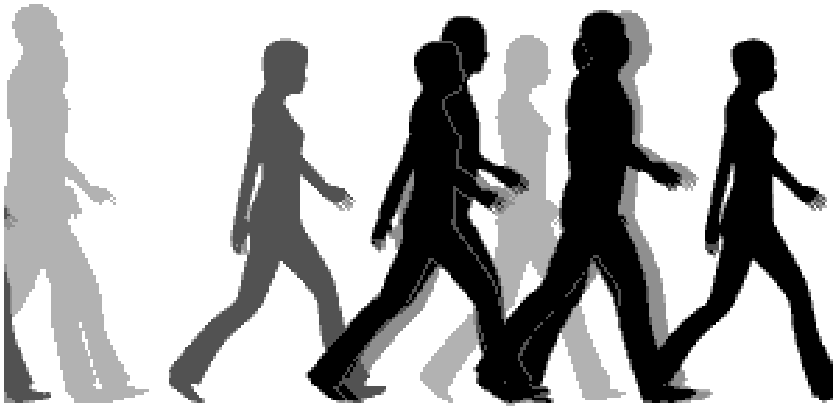
Gait Analysis
The gait cycle
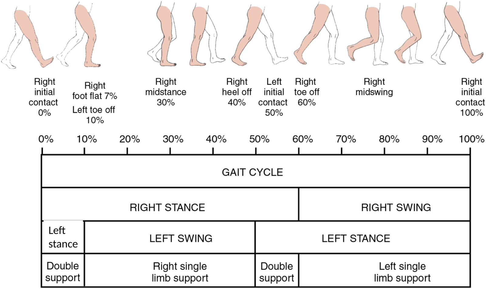
One cycle, or stride, runs from one event to the same event
on the same foot — conventionally heel strike to heel strike.
Stance is about 60% of it, swing the other 40%.
The two limbs are half a cycle out of phase, so the left is in swing while the right is in
stance.
Both feet are down twice per cycle — double support, about 10% each time.
It is the presence of double support that makes this walking rather than running.
Gait Analysis
The same diagram, from a recorded walk
Gait Analysis
Stance, in four parts
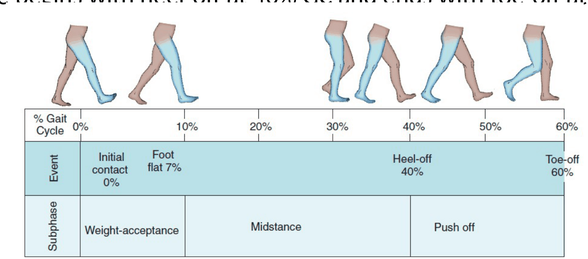
Weight acceptance begins at initial contact and ends at foot flat,
about 10% of the cycle. The limb takes the load and absorbs the impact.
Midstance begins at foot flat around 7–10% and ends at heel-off at
about 40%. The body passes over the foot.
Push-off begins with heel-off at 40% and ends at toe-off at about 60%.
This is where the leg does most of its positive work.
The names vary between textbooks — Perry's terminology splits
stance into loading response, mid-stance, terminal stance and pre-swing. The events are
the same; only the labels move. Read which scheme a paper is using before comparing
numbers to it.
Gait Analysis
Swing, in three parts
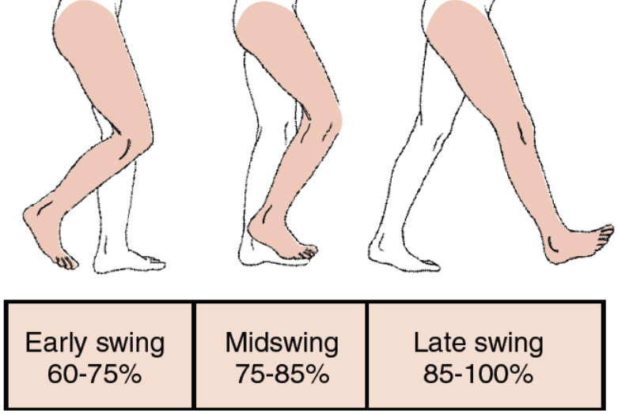
Early swing, 60–75%, begins when the toe leaves the ground and
continues until midswing. Also called initial swing, or the acceleration phase.
Midswing, 75–85%, is where the swinging leg passes directly beneath
the body — the moment of least ground clearance.
Late swing, 85–100%, is the deceleration phase: the limb is being
slowed in preparation for heel strike.
Midswing is the critical instant. The foot clears the floor by
one or two centimetres and the knee is still partly flexed. Four of the five
abnormalities at the end of this lecture exist to buy a little more clearance at exactly
this moment.
Gait Analysis
The variables we actually measure
Temporal variables (time): stance time, single-limb and
double-support time, swing time, stride and step time, cadence, and speed.
Spatial variables (distance): stride length, step length and
width, and the degree of toe-out.
Each may be modified by age, sex, height, the distribution of mass in the
body segments, joint mobility, muscle strength, clothing and footwear, habit, and
psychological state.
That last list is why a single person's numbers mean little on
their own, and why the useful comparisons are either left against right
in the same person, or before against after an intervention.
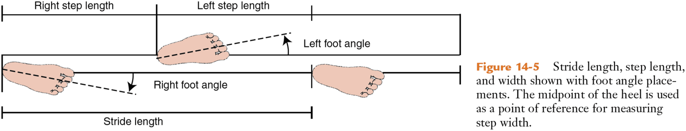
Gait Analysis
Temporal variables — the times
Stance time — the time spent in stance by one limb during a
gait cycle.
Single-support time — the time during which only that one
limb is on the ground.
Double-support time — the time with both feet on the ground
during one gait cycle, counting both occurrences.
Double support is increased in elderly people and in those with balance
disorders — it is the safest part of the cycle and a cautious walker spends longer in it.
Double support decreases as walking speed increases, and reaches zero
at the walk–run transition.
Double support is the overlap between the two limbs' stance times —
it does not appear on a footprint diagram at all, which is why both kinds of variable
are needed.
Gait Analysis
Temporal variables — duration, cadence, velocity
Stride duration — the time to complete one stride. About one
second in a normal adult.
Step duration — the time spent on a single step. With
weakness or pain in one limb, step duration decreases on the affected side and increases on
the unaffected one.
Cadence — steps per unit time.
A shorter step length gives a higher cadence at any given velocity.
As cadence rises, double support shortens; approaching 180 steps per minute it
disappears and running begins.
Typical cadence is about 110 steps/min for men and 116 for women.
Walking velocity — the rate of forward motion of the body.
velocity = step length × cadence
Gait Analysis
Spatial variables
Stride length — the linear distance between two successive
events accomplished by the same lower extremity.
Affected by leg length, height, age, sex and more.
Normalise by leg length or by height so that people of different sizes can be compared.
Decreases in elderly people and increases with gait speed.
Step length — the linear distance between successive contacts
of opposite extremities.
Comparing right and left step lengths gives an indication of gait symmetry.
Two step lengths make one stride, so they must sum to the stride length — a useful
check on anyone's numbers, including your own.
Gait Analysis
Step width and toe-out
Step width — the width of the walking base, measured between
the midpoint of one heel and the same point on the other.
Increases when side-to-side stability is in demand: children, elderly people, anyone
unsteady.
In a normal adult population, mean step width is about 3.5 inches,
roughly 9 cm.
Degree of toe-out — the angle between the foot's line of
progression and the line of travel.
Normally about 7° from the line of progression for each foot.
Decreases as walking speed increases.
Note the care in the definition: the midpoint of the heel,
not the back of it. A marker stuck on the back of a shoe is not that point, and the
difference shows up in the numbers.
Gait Analysis
The footprint diagram, measured
Gait Analysis
Asymmetry
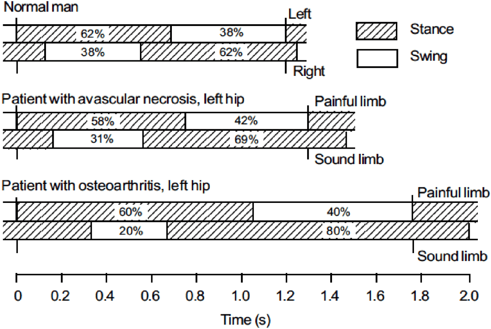
The clearest way to show a limp is to draw both limbs' stance and swing
against the same clock.
Normal — 62% stance and 38% swing, the same on both sides.
Avascular necrosis of the left hip — the painful limb spends less time
in stance (58%) and the sound limb more (69%).
Osteoarthritis of the left hip — the same pattern, further exaggerated:
60% against 80%.
The pattern is general: a painful or weak limb is unloaded
sooner, so its stance time falls and the other limb's rises. This is the
antalgic gait, and the stance-time ratio is a usable measure of it.
Gait Analysis
How symmetric is a normal walk?
Gait Analysis
Gait through childhood
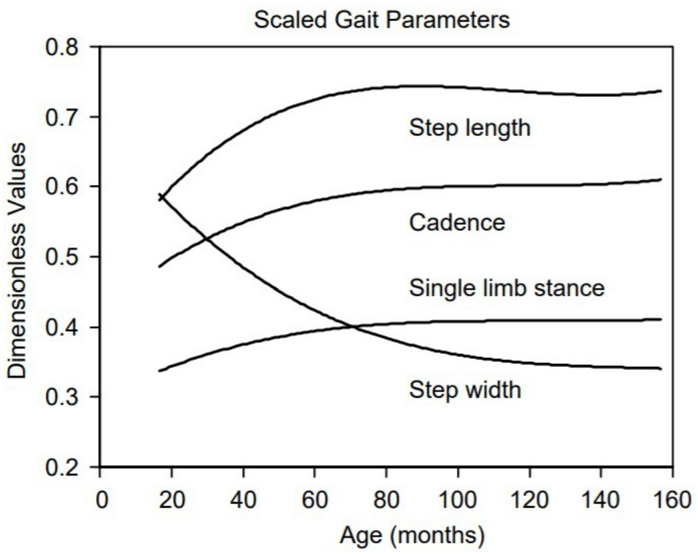
Scaled by leg length, the fundamental gait parameters change through the
first six years of life and then stay very similar.
Step length and single-limb stance rise — a child
grows into longer, more confident steps.
Step width falls steeply — the wide-based toddler gait narrows as
balance improves.
Cadence falls, because the legs are getting longer.
All four curves flatten by about 80 months — roughly seven years
old. After that, a child's gait is an adult's gait at a smaller scale, which is why these
plots are drawn dimensionless.
Gait Analysis
Age and sex in adults
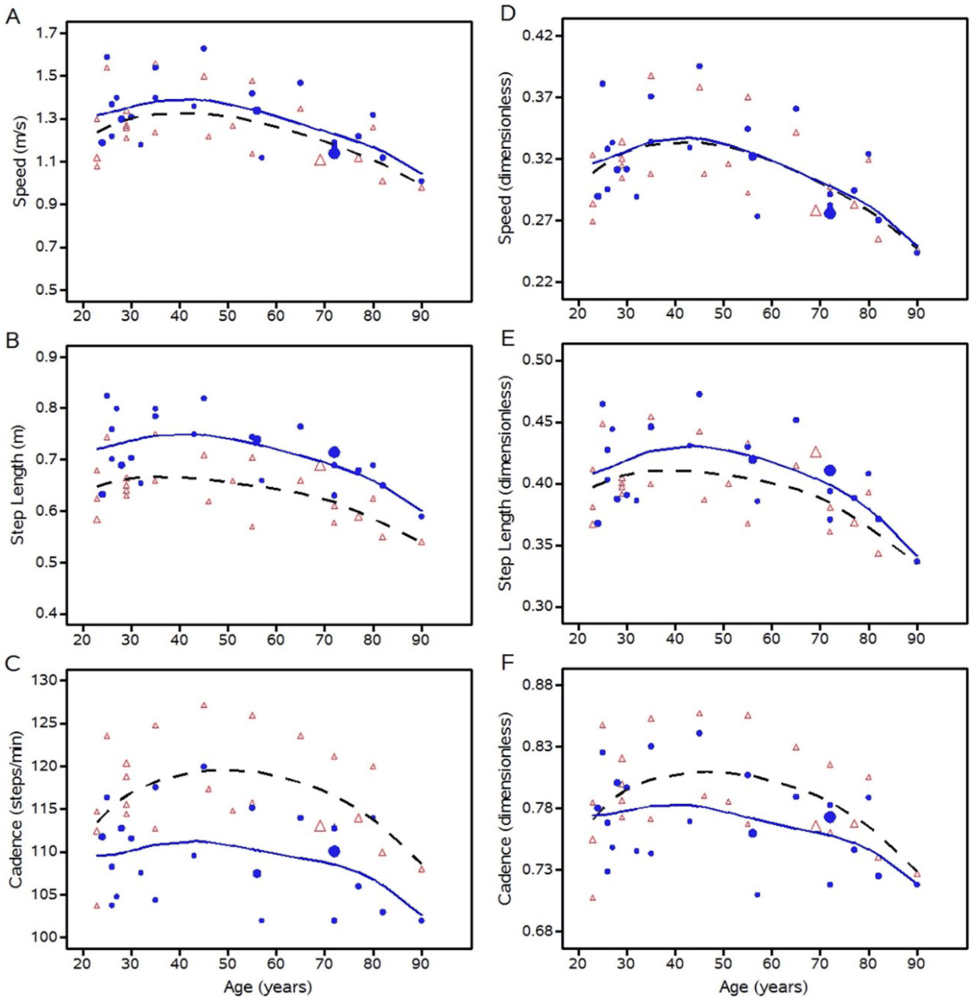
Normalised to leg length, across adulthood:
Speed declines at the same rate in both sexes.
Step length decreases more in men.
Cadence decreases more in women.
Two different routes to the same loss of speed. It is the kind of
result that only shows up once the raw numbers have been normalised — the left-hand
column of panels mostly shows how tall people are.
Gait Analysis
Beyond the basic parameters
The basic parameters are valuable, but they describe the outcome of
walking. To ask what produced it we need the kinetics and kinematics of each joint.
A link-segment model treats the body as a chain of rigid
segments and uses inverse dynamics to find the forces and moments that must have acted at
each joint. Start at the segment touching the ground and work upwards.
To do it, three things must be known for every instant:
the positions of the segments through the cycle, from motion analysis;
the ground reaction force, from a force plate;
the mass, centre of mass and moment of inertia of each segment, from
anthropometric tables.
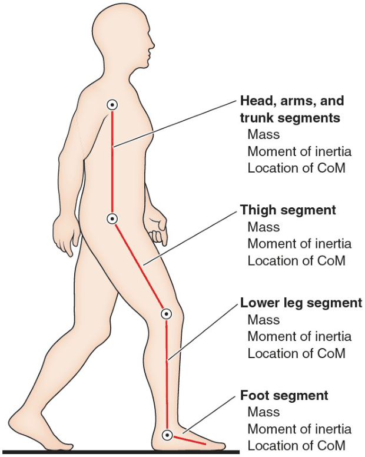
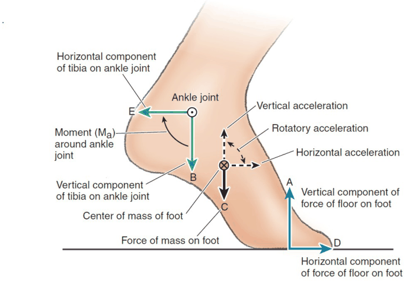
Gait Analysis
Motion capture
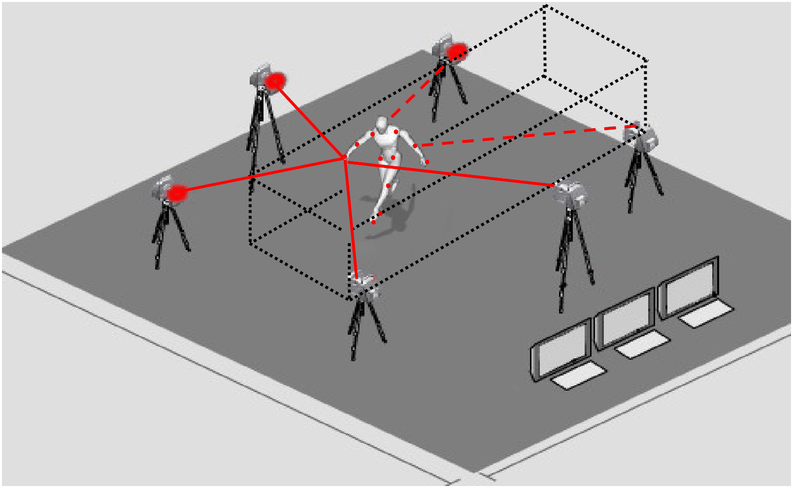
Reflective markers are placed on anatomical landmarks. Infrared cameras ring
the volume, each flashing a ring of infrared light and recording what comes back.
Each camera sees a marker as a bright blob at a 2D image position. Given
at least two cameras that can see the same marker, and a calibration that
tells you where each camera is, the marker's position in space can be triangulated.
"At least two" is the theoretical minimum and never the practical
one. Markers are hidden by the swinging arms, by the other leg, and by the body itself,
so a system has eight to sixteen cameras to make sure two of them can always see every
marker.
Gait Analysis
Twelve views, one point in space
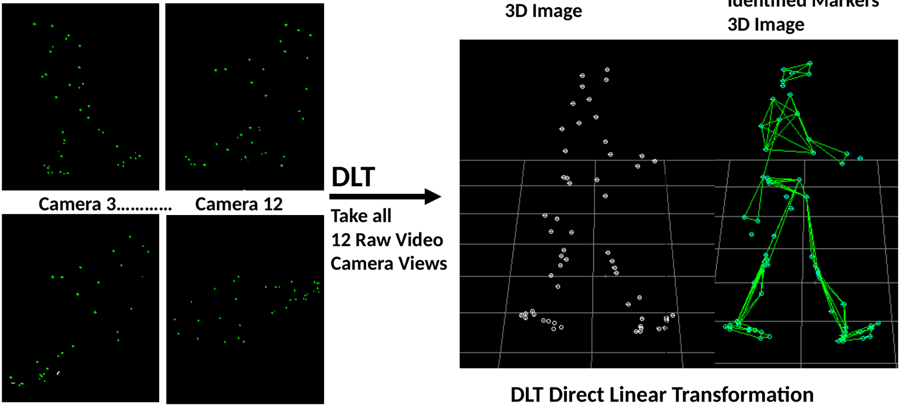
Each camera contributes a 2D view. The direct linear
transformation (DLT) relates image coordinates to real-world coordinates through
a set of calibration constants, found by waving a known object through the volume.
With every camera's view of a marker and every camera's DLT constants, the
marker's 3D position follows by least squares — more cameras means a better-conditioned
solution, not just redundancy.
What comes out is an anonymous cloud of points. Turning that into
"right lateral malleolus" is a separate step — labelling — and it is
still the part of the process most likely to need a human.
Gait Analysis
From markers to joint angles
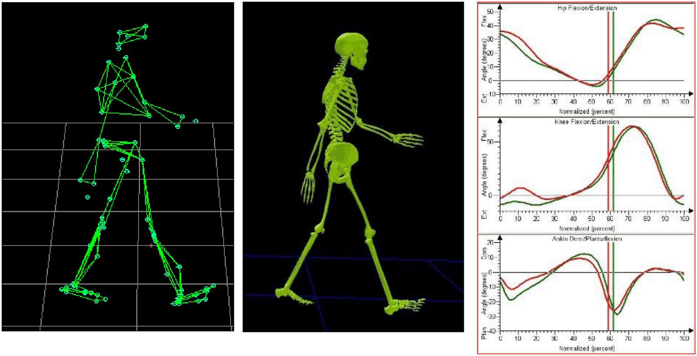
Markers define each segment's position and orientation.
A joint angle is the relative orientation of the two segments meeting at it — which means
a joint angle is a derived quantity, two steps removed from what was measured.
Differentiating position gives velocity and acceleration, which inverse dynamics needs —
and differentiation amplifies noise, so the data must be filtered first.
The output is normalised to 0–100% of the gait cycle so that strides of different durations
can be averaged and compared.
Gait Analysis
The sagittal joint angles
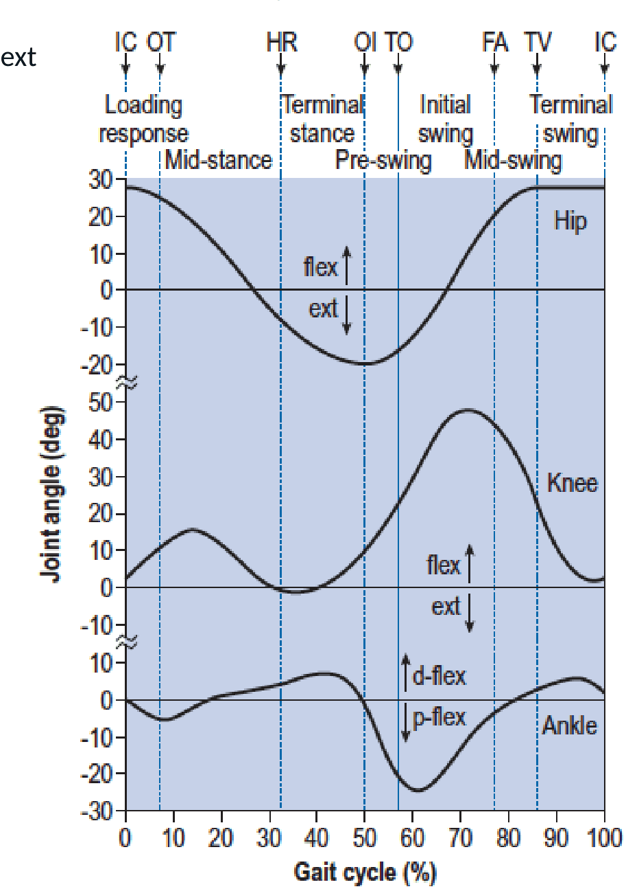
Hip — maximum flexion at initial contact; extends through
stance to a maximum near heel-off at about 50%; flexes again through swing.
Knee — near 0° at initial contact and again just before
heel-off, with a small flexion wave in loading response; maximum flexion of about
60° at roughly 70% of the cycle, then extends ready for contact.
Ankle — maximum dorsiflexion at heel-off; maximum
plantarflexion at toe-off, around 60%; then back to neutral for landing.
Each curve has two phases of motion per cycle,
not one. The knee flexes twice — a small wave under load and a large one in swing — and
mistaking one for the other is the commonest misreading of this graph.
Gait Analysis
The frontal plane
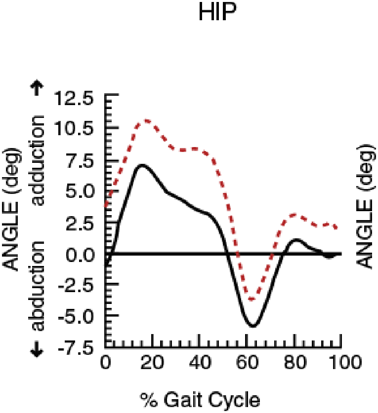
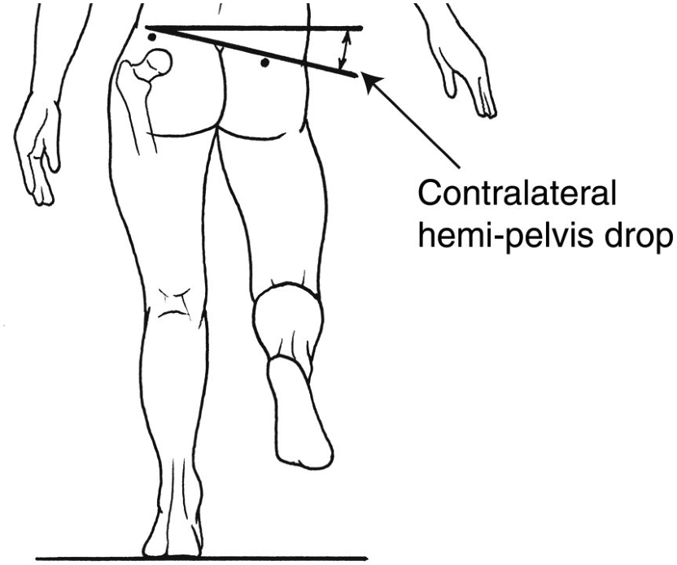
During the first 20% of stance the pelvis on the contralateral
side drops about 5°, which appears at the stance hip as adduction.
It is a controlled drop, not a collapse: the stance-side abductors are paying
for it the whole time. Remove them and you have the Trendelenburg sign from the last
lecture.
Gait Analysis
Angle, moment and muscle, one joint at a time
Gait Analysis
What a force plate gives you
A force plate measures the resultant of everything the foot is doing to the
ground, and by Newton's third law what the ground is doing to the foot. Three quantities
come out of it:
the ground reaction force, as three orthogonal components — vertical,
anteroposterior and mediolateral;
the centre of pressure, the single point at which that resultant can be
considered to act;
the free moment about the vertical axis — the twist the foot applies to
the floor.
It gives you one resultant for the whole foot.
It cannot tell you that the heel is loaded and the forefoot is not; that is what a
pressure mat is for, and the two are often confused.
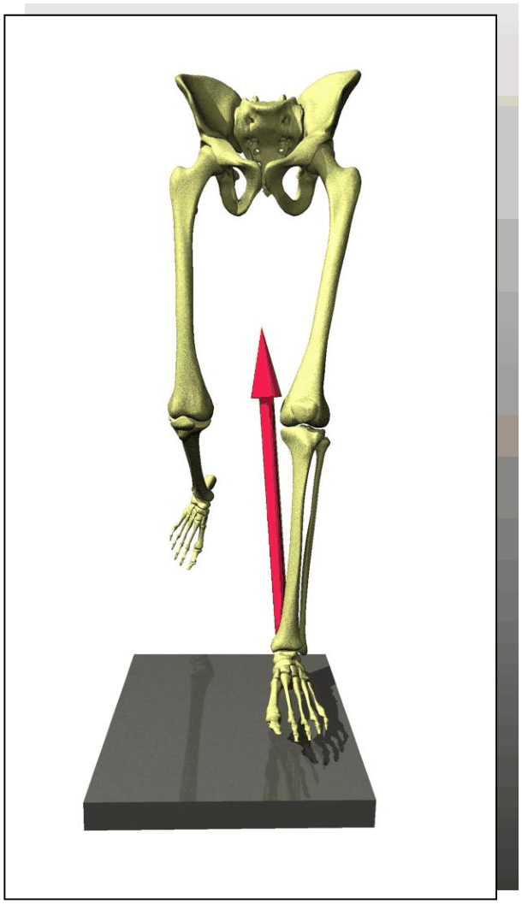
Two plates set into the walkway, one per foot, sampled here at
960 Hz against the cameras' 60.
Gait Analysis
The vertical force
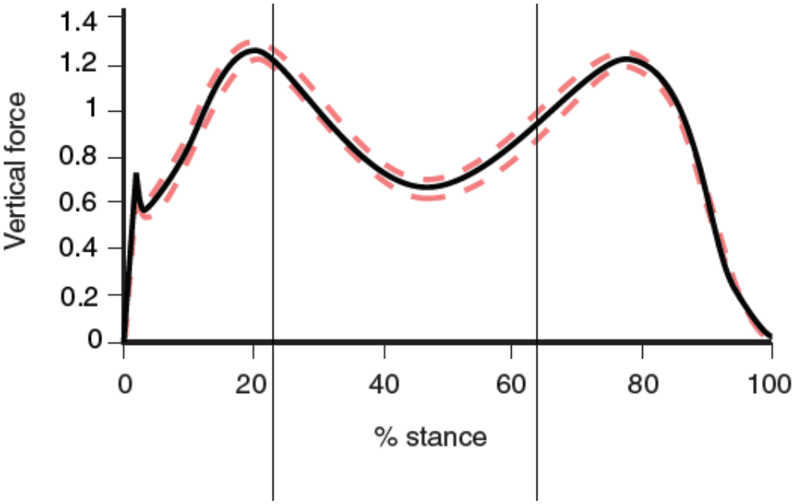
The vertical force has a characteristic shape: two humps above body
weight with a valley between them.
The first hump is weight acceptance — the body's downward velocity is
being arrested, which takes more than body weight.
The valley at midstance is the body's centre of mass being accelerated
upward less than gravity, as it passes over the foot. The knee unloads slightly.
The second hump is push-off: the centre of mass is being accelerated
upwards again, which once more takes more than body weight.
It is not a measure of effort. The humps are above body weight
because the centre of mass is accelerating, and the valley is below it for the same
reason with the sign reversed. F = ma, applied to the whole body.
Gait Analysis
Contact to midstance
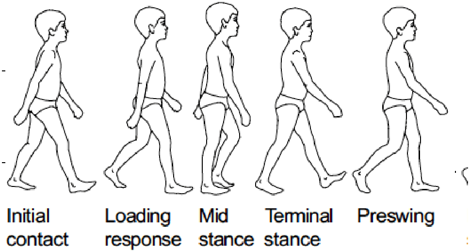
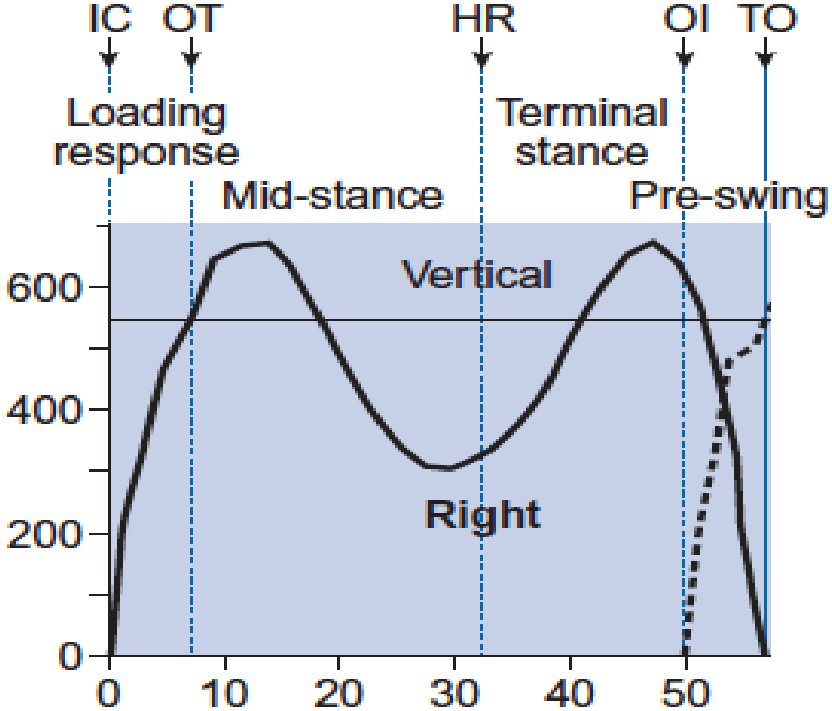
Initial contact (0%) — the instant the leading foot touches
the ground. Preparation for loading response; heel strike or heel contact.
Loading response (0–10%) — body weight transferred onto the
stance limb, foot comes into full contact, the vertical force rises to its first peak. This
is the first period of double support.
Midstance (10–30%) — the opposite foot leaves the ground and
body weight travels along the foot until it is aligned over the forefoot. The vertical force
is on its descending limb. First half of single support.
Gait Analysis
Terminal stance to toe-off
Terminal stance (30–50%) — begins with heel rise and ends
when the opposite foot contacts the ground. Body weight moves ahead of the forefoot; the
vertical force climbs to its second peak. Second half of single support.
Pre-swing (50–60%) — begins at opposite foot contact, ends
at toe-off. The stance limb is unloaded and body weight transfers to the other limb. The
descending limb of the second peak. Second period of double support.
Toe-off (about 60%) — the instant the foot leaves the ground.
End of stance, beginning of swing.
Gait Analysis
All three components, measured
Gait Analysis
The force through the whole of stance
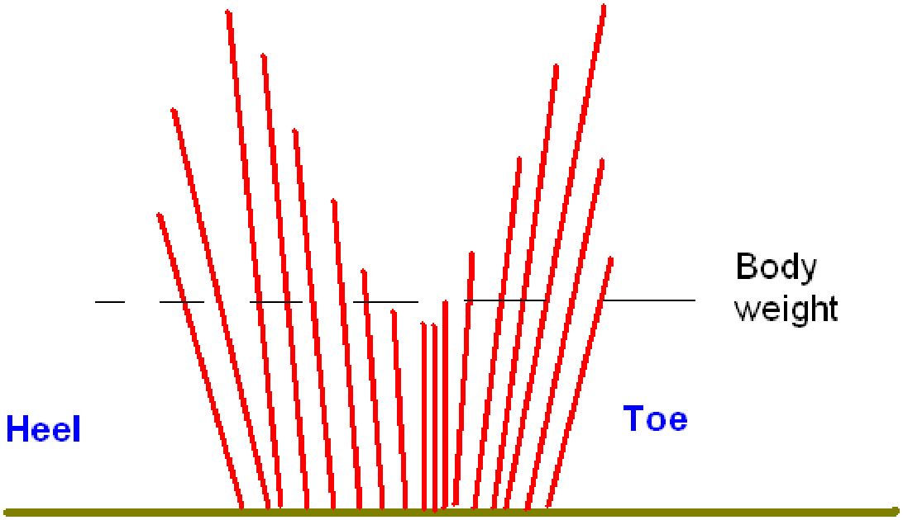
Draw the resultant force vector at intervals of about 50 ms through stance,
each one from its own centre of pressure, and the whole of stance is on one picture.
The leftmost line is the vector at the moment the foot touches the ground; each
subsequent line is 50 ms later; the rightmost is at toe-off.
The length of each line is the magnitude; the lean is
the fore–aft component; the foot of each line is the centre of pressure.
Three variables on one figure, and the shape is so consistent
between healthy people that it is sometimes called the butterfly diagram
and read at a glance.
Gait Analysis
The butterfly, from measurement
Gait Analysis
Braking, then propulsion
At initial contact the ground reaction force acts diagonally backwards
and upwards, from the heel:
the horizontal component acts backwards, braking the body;
the vertical component is greater than body weight, arresting the controlled downward
fall.
Through the middle of stance the point of action moves forward from the heel
and the line of action becomes nearly vertical, so the braking effect disappears.
At the end of stance the force increases again, now acting forwards
and upwards: the propulsion that keeps the body moving and stops it falling.
Over a stride at constant speed the braking and propulsive
impulses must be equal and opposite. If they were not, you would be
speeding up or slowing down — which, on a short overground walkway, is exactly
what people are still doing.
Gait Analysis
The anteroposterior force
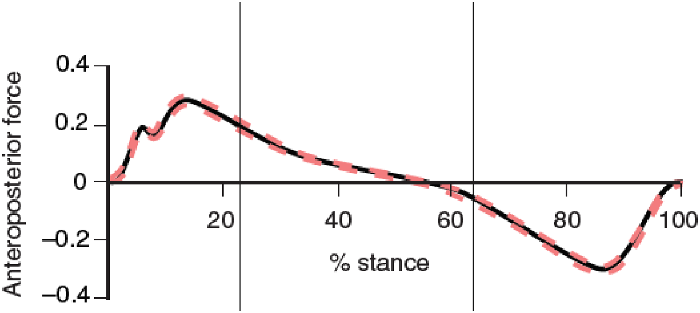
The anteroposterior force is directed posteriorly against the
foot at initial contact, which is what stops the foot sliding forward. It reaches a maximum
of about 20% of body weight.
At midstance it passes through zero. Through the second half of stance it is
directed anteriorly, enabling push-off.
Twenty per cent of body weight, horizontally, is also the
friction the floor has to supply. A coefficient of friction below about 0.2 and the foot
slips — which is why ice, polished floors and wet tiles are dangerous at exactly the two
moments this trace is largest.
Gait Analysis
The mediolateral force
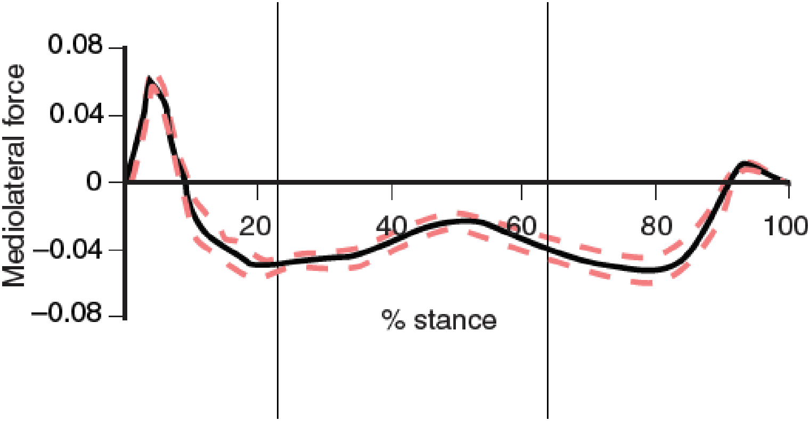
The mediolateral forces are small in magnitude and variable across
individuals. Typical peaks are under 10% of body weight — an order of magnitude
below the vertical force.
A brief spike at contact as the foot lands and the body is caught laterally.
A sustained, smaller component through single support, directed medially, keeping the
body over the stance foot.
"Variable across individuals" is not a hedge. The two subjects in
this lecture's data have mediolateral traces of opposite sign through much of
stance, and both are perfectly normal walkers.
Gait Analysis
The centre of pressure
The single point on the foot at which the resultant surface pressure may be
considered to act is the centre of pressure. It is the starting point of
the ground reaction force vector, and therefore it is what sets every moment arm in the leg.
It starts at the heel at initial contact.
It moves forward along the foot through stance, quickly at first, then
slowly through midstance.
It ends under the forefoot and toes at toe-off.
It is a weighted average, so it can sit somewhere that is
carrying no load at all — between two pressure peaks, or between the two feet during
double support if the plate sees both.
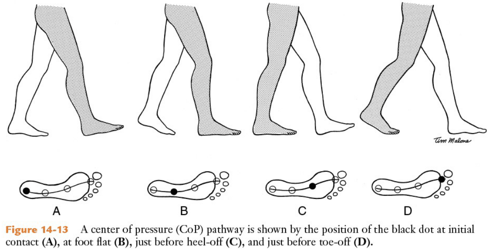
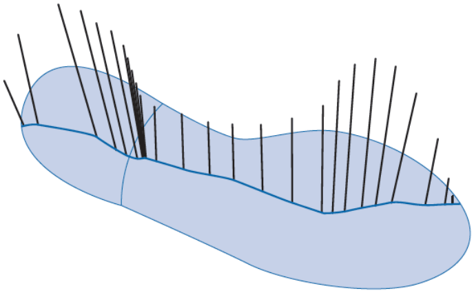
Gait Analysis
The path under the foot
Gait Analysis
External and internal moments
External moments are produced about the joints by forces
from outside the body — gravity and the ground reaction force.
Internal moments are produced by muscles, joint capsules and
ligaments, and counteract them.
At initial contact, for instance, the ground reaction force passes behind the
ankle, which tends to plantarflex it. The anterior tibial muscles answer with an
internal dorsiflexor moment, and the foot is lowered under control instead of
slapping down.
This is the angular kinetics material, and the convention is the
one that catches people out: a gait graph labelled "dorsiflexor moment" means the
ground was trying to plantarflex. The curve names the muscle group, not
the direction of the external force.
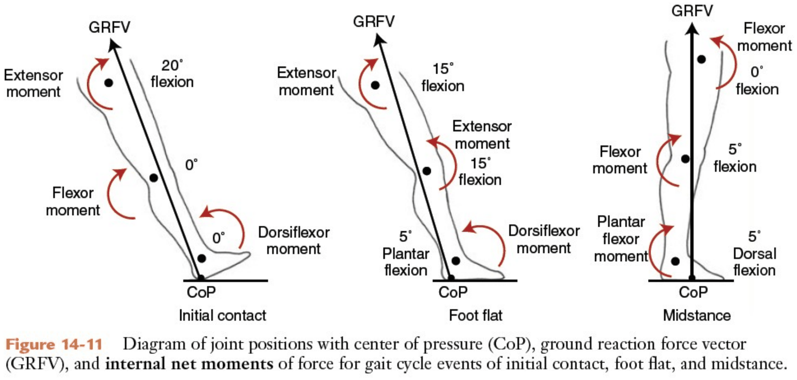
Gait Analysis
Which side of the joint, through stance
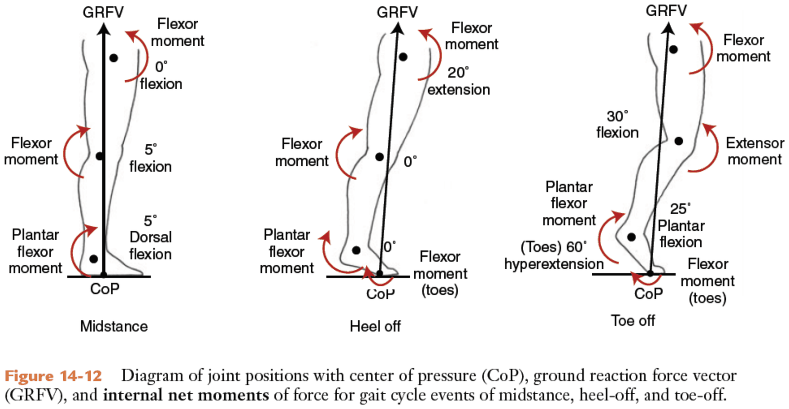
At initial contact the vector passes behind the ankle — tending to
plantarflex it — but in front of the knee and hip, tending to extend them.
In early stance it swings behind the knee, tending to flex it, and the
quadriceps answer. It moves ahead of the knee again by late stance.
From about midstance it passes behind the hip and stays there until
swing begins.
At the ankle it moves steadily further in front of the joint as the centre of pressure
runs forward, which is what builds the plantarflexor moment to its peak.
Gait Analysis
Muscle activity in stance
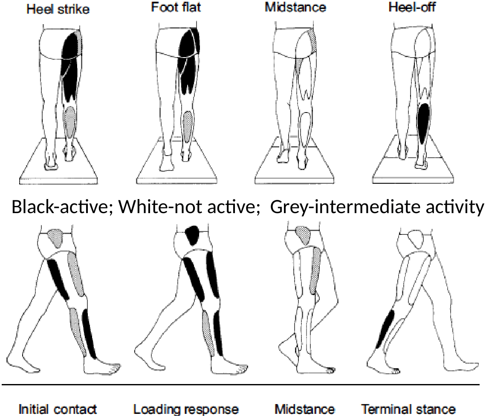
The timing of peak muscle activity tells you what each muscle is for.
Glutes — hip extension during loading response.
Quadriceps — knee extension during loading response.
Calves — ankle plantarflexion during heel rise in terminal stance.
Read "extension" here as the moment, not the movement.
The quadriceps are producing an extensor moment while the knee is flexing
— they are lengthening under load, lowering the body rather than lifting it.
Gait Analysis
Muscle activity in swing
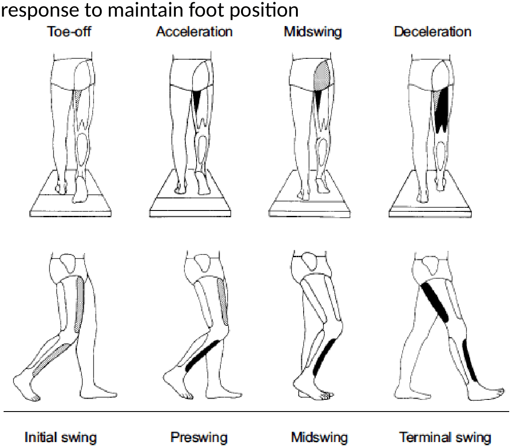
Iliopsoas — hip flexion through pre-swing and initial swing, which is
what starts the limb forward.
Hamstrings — hip extension to decelerate the limb through
terminal swing.
Tibialis anterior — ankle dorsiflexion through swing to allow foot
clearance, and again at loading response to lower the foot under control.
Tibialis anterior is the only one of the three that works twice
per cycle, and it is doing a different job each time: clearance in swing,
controlled lowering at contact.
Gait Analysis
The whole timing chart
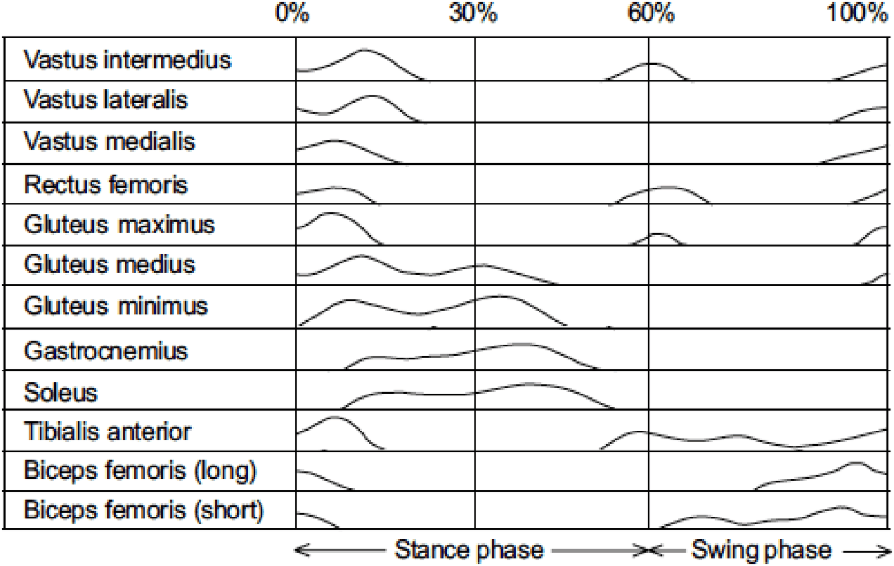
Twelve muscles, one cycle. Three things are worth reading off it:
Most muscles are off most of the time. Walking is cheap because the
muscles work in short bursts.
Activity clusters at the transitions — loading response and the
stance-to-swing handover — not in the middle of stance.
Muscles crossing two joints (rectus femoris, gastrocnemius, the hamstrings) have more
complicated patterns than one-joint muscles, because they are answering to two joints
at once.
What a chart like this cannot show is the deep
muscles. Iliopsoas appears on his figure and no surface electrode will ever record it.
Gait Analysis
Linking the moment to the muscle — the hip
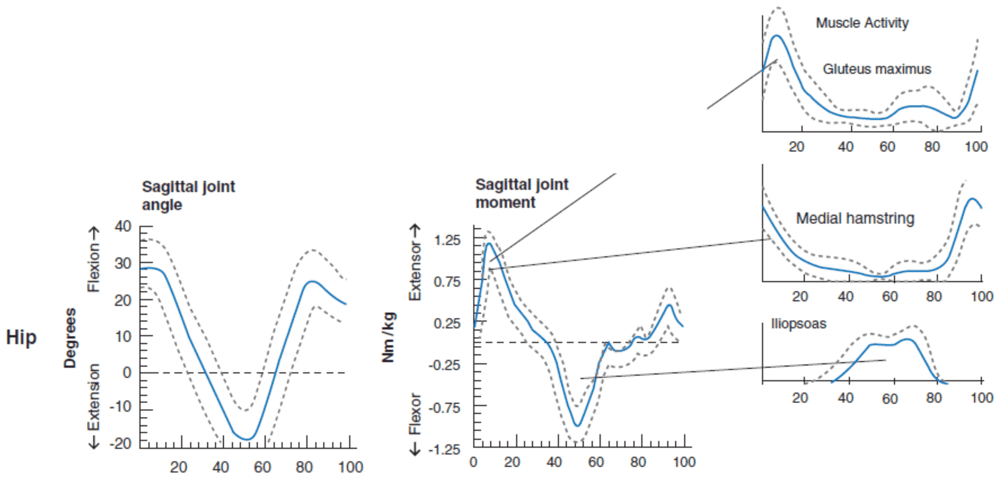
Internal joint moments can be linked to the muscles producing them.
Gluteus maximus and the hamstrings support the extensor moment during
weight acceptance.
Iliopsoas supports the flexor moment through pre-swing and initial
swing.
Three panels — angle, moment, muscle — are the minimum needed to
say anything useful about a joint. The moment alone is ambiguous; with the angle it tells
you concentric or eccentric; with the EMG it tells you which muscle.
Gait Analysis
…the knee, and the ankle
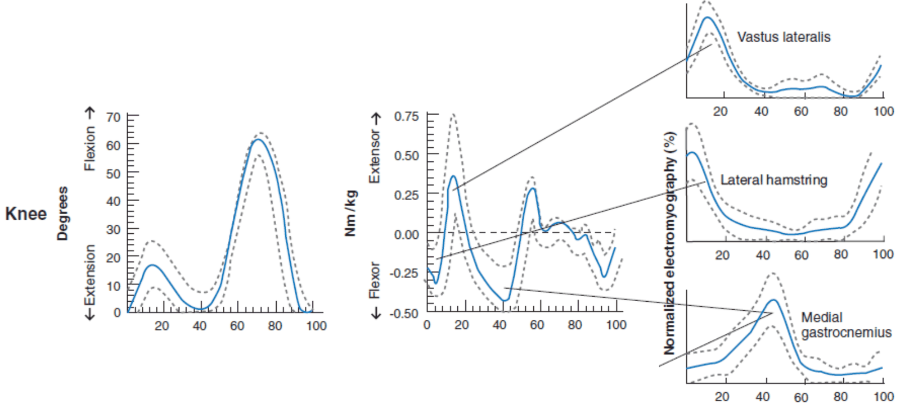
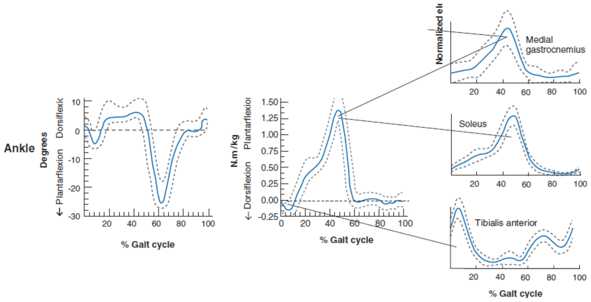
Knee. Vastus lateralis supports the extensor moment during
mid stance; medial gastrocnemius supports the flexor moment during terminal stance — it
crosses the knee as well as the ankle.
Ankle. Tibialis anterior supports the dorsiflexor moment
during weight acceptance; soleus and medial gastrocnemius support the plantarflexor moment
through terminal stance.
Gastrocnemius appears on both figures, producing a plantarflexor
moment at the ankle and a flexor moment at the knee from the same contraction.
A two-joint muscle cannot choose.
Gait Analysis
The support moment
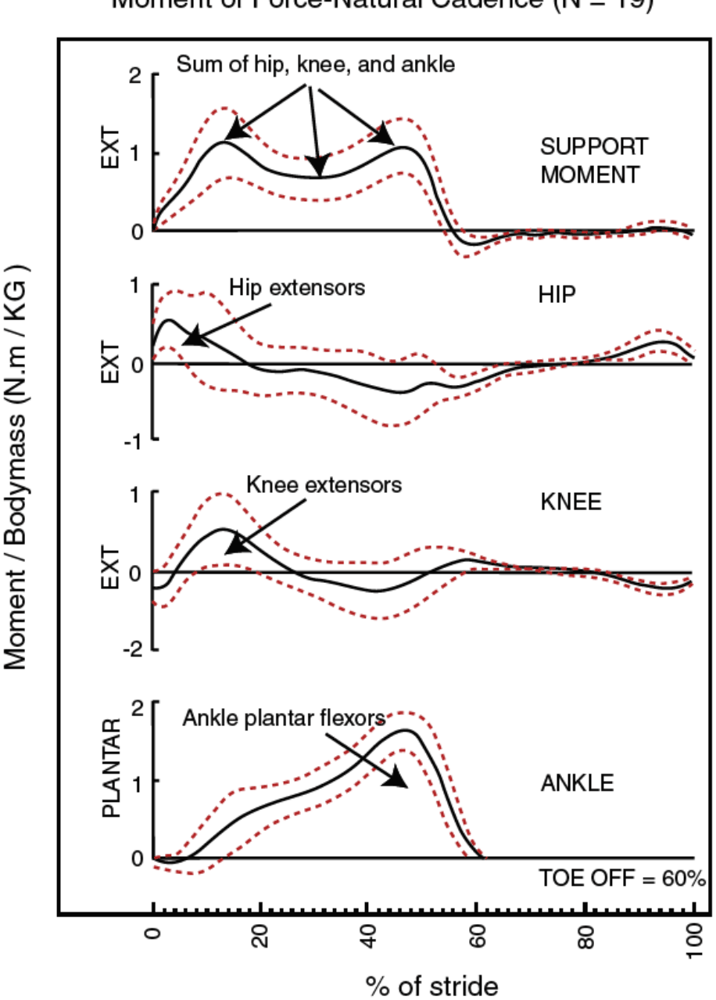
The support moment is the sum of the hip, knee and ankle
moments, with extension positive at all three. It stays extensor through
stance, and that is what keeps the leg from collapsing.
Hip extension provides all of the early positive moment, joined by a knee extensor
moment.
As stance proceeds the ankle plantarflexors take over, until they are
the only support through most of late stance.
Ms = Mhip + Mknee + Mankle
Gait Analysis
Three joints, one total
Gait Analysis
Trading one joint against another
The support moment changes from a net extensor to a net flexor moment in late
stance, which is what initiates swing. A small net extensor moment reappears in late swing,
positioning the limb for contact.
As long as the moments add up to be extensors, the body can vary how
it accomplishes its support. For example:
if the ankle plantarflexors are weak, the hip extensors and the knee extensors can
compensate;
if contraction of the knee extensors causes pain, the hip extensors and the
plantarflexors can contract harder.
This is why a single joint's moment is a poor clinical measure
and the sum is a good one. The compensation is the finding.
Models, and what walking costs
Why a stiff leg and a falling body turn out to be a good idea
Gait Analysis
The inverted pendulum
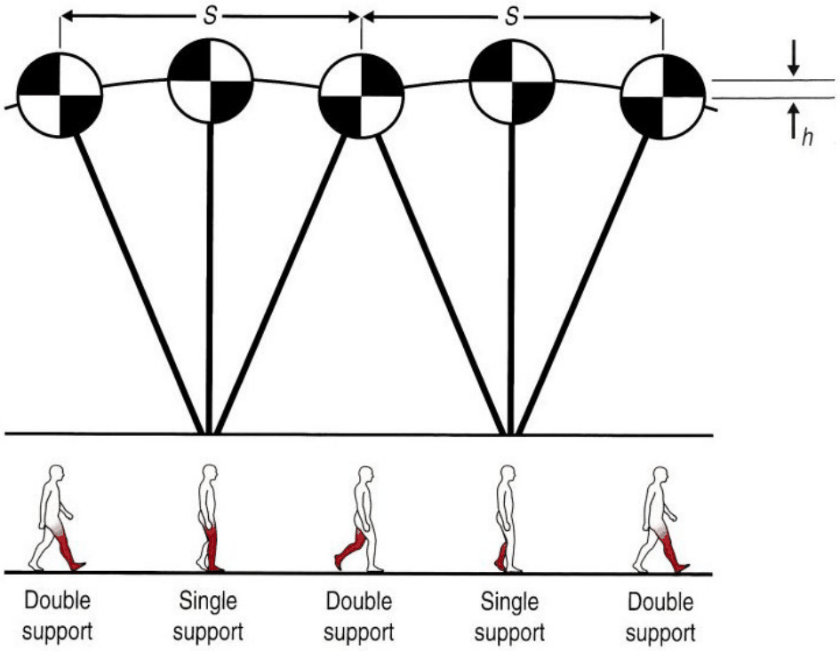
The mechanical analogy for walking is an inverted pendulum:
during single-limb support the body vaults over a nearly straight limb.
The centre of mass is highest at midstance and lowest at each double
support — the opposite of what intuition suggests.
Rising costs potential energy and slows the body; falling returns it and speeds the
body back up.
Potential and kinetic energy are therefore out of phase, and the
exchange between them is nearly free.
A pendulum exchanges energy without any muscle doing work. That
exchange is why walking at a comfortable speed is so cheap, and why it has an optimal
speed at all.
Gait Analysis
Is a person actually a pendulum?
Gait Analysis
Where the energy actually goes
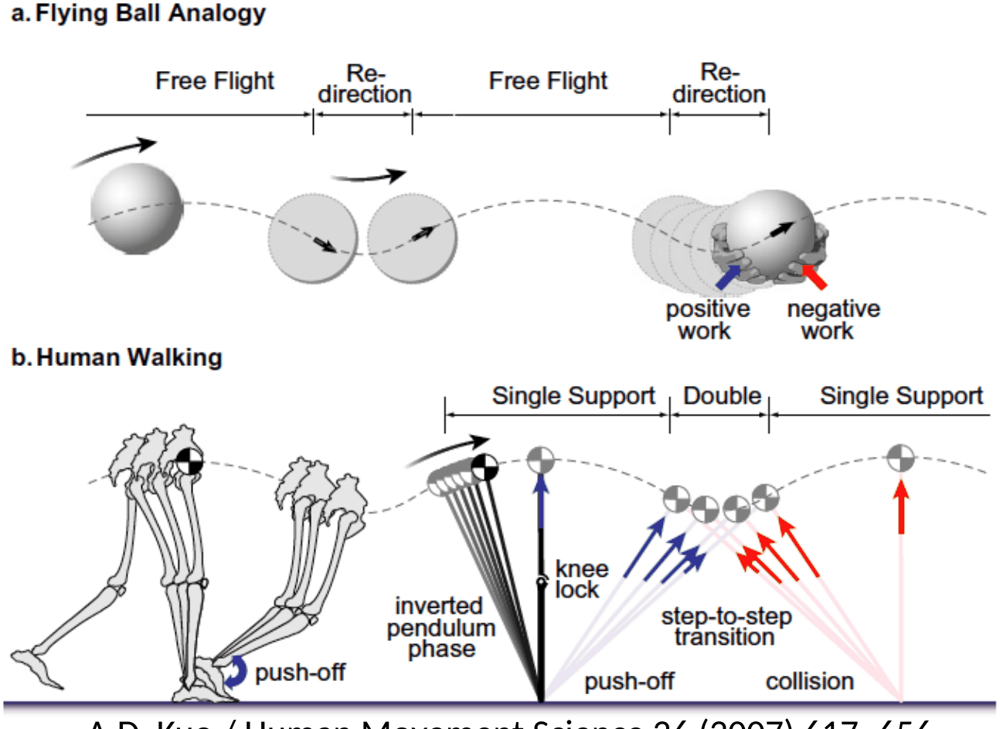
A. D. Kuo, Human Movement Science 26 (2007) 617–656
During double support the whole body's centre of gravity has to be
redirected from the arc over one limb to the arc over the next.
The pendulum continues on the other side afterwards — so the major energy
expenditure in walking is not the vaulting at all. It is the
redirection.
The leading leg collides with the ground and takes
energy out; the trailing leg pushes off and puts it back. Both cost, and the cost grows
steeply with step length — which is what sets the preferred step length.
Gait Analysis
Leg length discrepancy
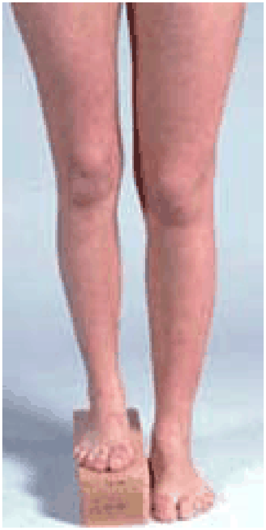
Four of the common abnormalities — circumduction, hip hiking, steppage and
vaulting — are closely related: they are all compensations for the same problem, a
difference in effective leg length between swing and stance.
Structural discrepancies are an actual anatomical shortening
of one or more bones of the lower limb.
Functional leg length differences arise instead from muscular
weakness or inflexibility at the pelvis, or at the foot and ankle complex.
A stiff knee or a dropped foot makes the swinging limb
functionally too long even though the bones are the same length. The gait looks
the same either way, which is why the examination has to come before the interpretation.
Gait Analysis
Buying clearance at midswing
Gait Analysis
Circumduction and hip hiking
Circumduction — a swing phase modification.
Ground contact by the swinging leg is avoided by swinging it outward, in an arc
rather than straight forward.
Also used to advance the limb when the hip flexors are weak, by letting the adductors
act as hip flexors while the hip is extended.
Hip hiking — also a swing phase modification.
The pelvis is lifted on the side of the swinging leg, raising the whole limb.
Paid for by the quadratus lumborum and the trunk, on every step.
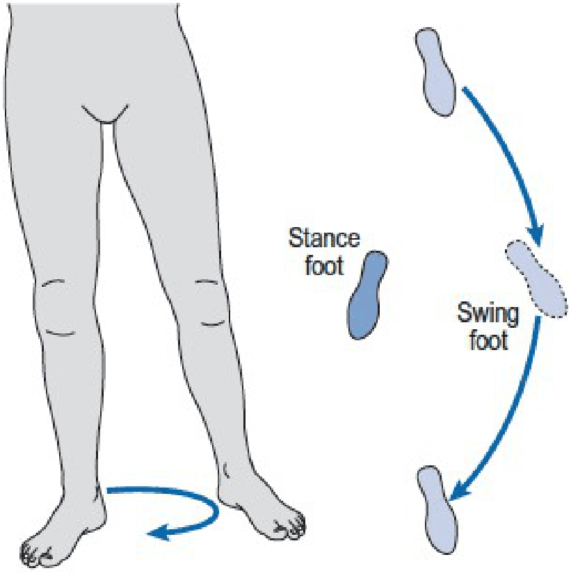
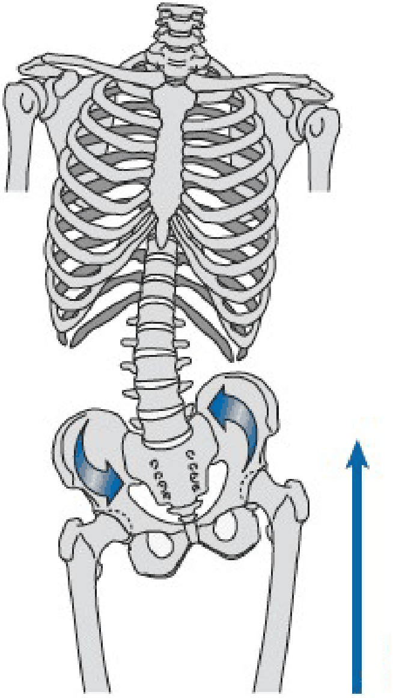
Gait Analysis
Steppage and vaulting
Steppage — a swing phase modification.
Exaggerated knee and hip flexion, to lift the foot higher than usual.
Used particularly to compensate for a plantarflexed ankle — foot drop,
from inadequate dorsiflexion control.
Vaulting — a stance phase modification.
The subject goes up on the toes of the stance leg, raising the body and so increasing
the clearance for the swinging leg.
Causes an exaggerated vertical movement of the trunk, which is wasteful of energy.
Vaulting is the odd one out, and its cost is the one the pendulum
model predicts: it adds vertical excursion to the centre of mass, which is energy that has
to be put in and taken out on every single step.
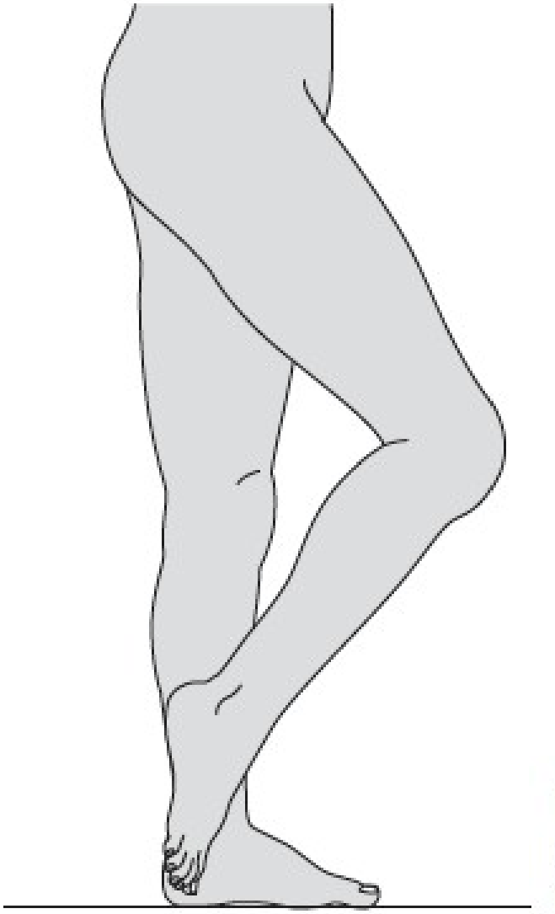
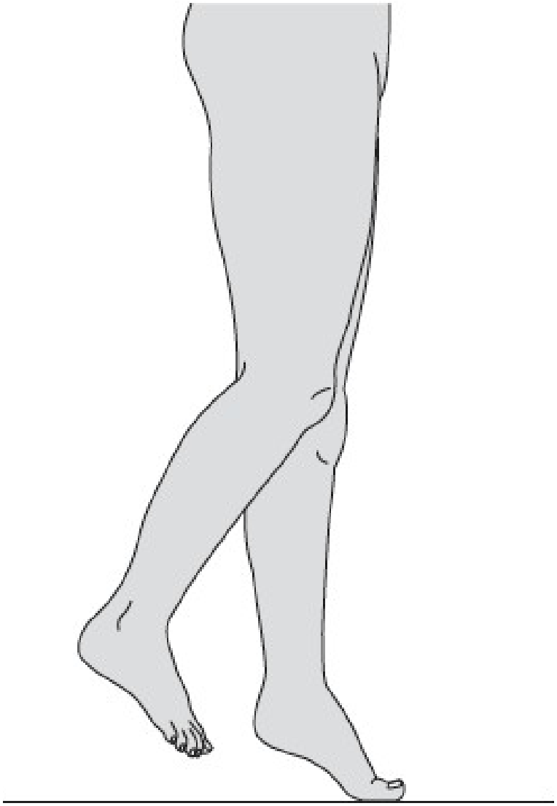
Gait Analysis
What to take away
The cycle is the unit. Heel strike to the same heel strike; about 60%
stance, 40% swing, with two periods of double support that vanish at the walk–run transition.
Normalise before comparing. Stride length divided by leg length is
comparable between people; stride length in centimetres is mostly a measure of height.
Every measurement has a definition inside it. Step width from a heel marker
is not step width from the midpoint of the heel, and the two differ by about a centimetre
whatever you do to the data.
The vertical force has two humps because the centre of mass accelerates —
not because the effort varies. The fore–aft force brakes, then propels, and over a stride
at a steady speed the two cancel — which a single overground stride often is not.
Read a joint with three panels. Angle, moment and EMG together say
concentric or eccentric and name the muscle; the moment alone says neither.
The support moment is the thing the body controls, not the individual joint
moments. Two healthy people make the same total in visibly different ways.
Walking is an inverted pendulum with a cost at each transition. About
sixty per cent of the energy is exchanged for free; the rest goes into redirecting the centre
of mass twice a stride.
Every compensation buys something and charges for it elsewhere.
Biomechanics (EPHE 341)
Gait Analysis
Next up: angular kinetics 2 — moment of inertia, angular momentum and joint power
· Measured data: Lencioni et al., two subjects, level walking